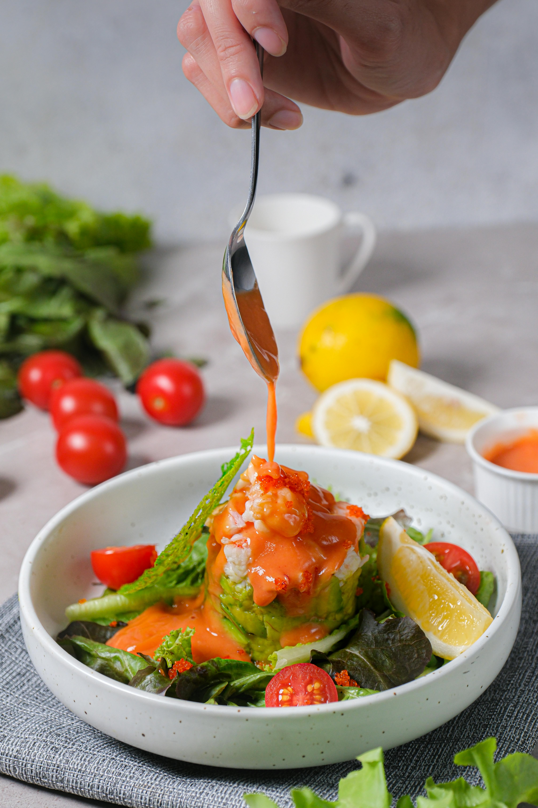
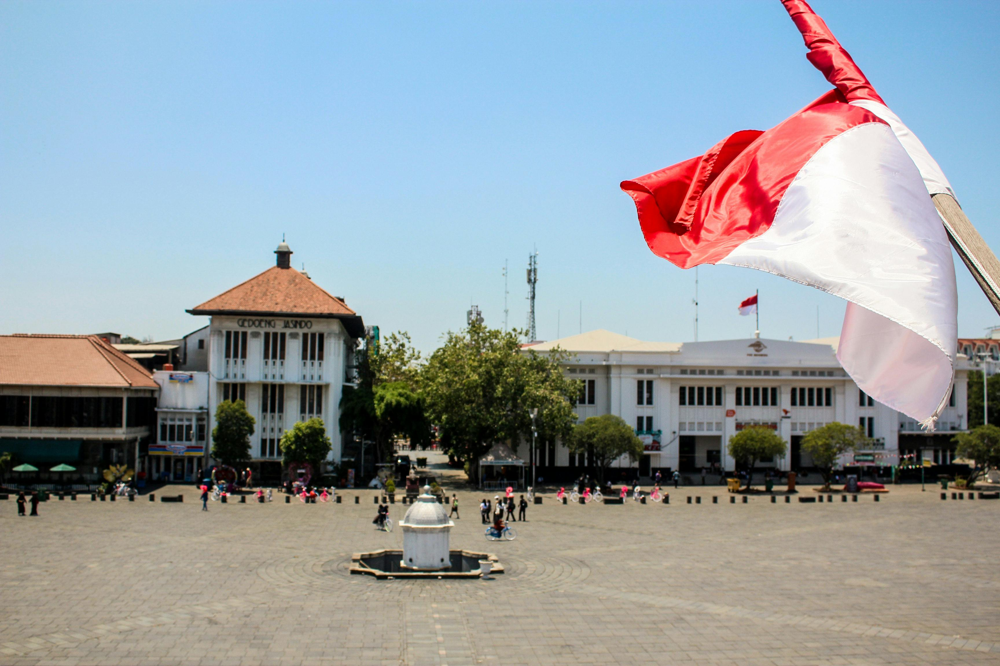
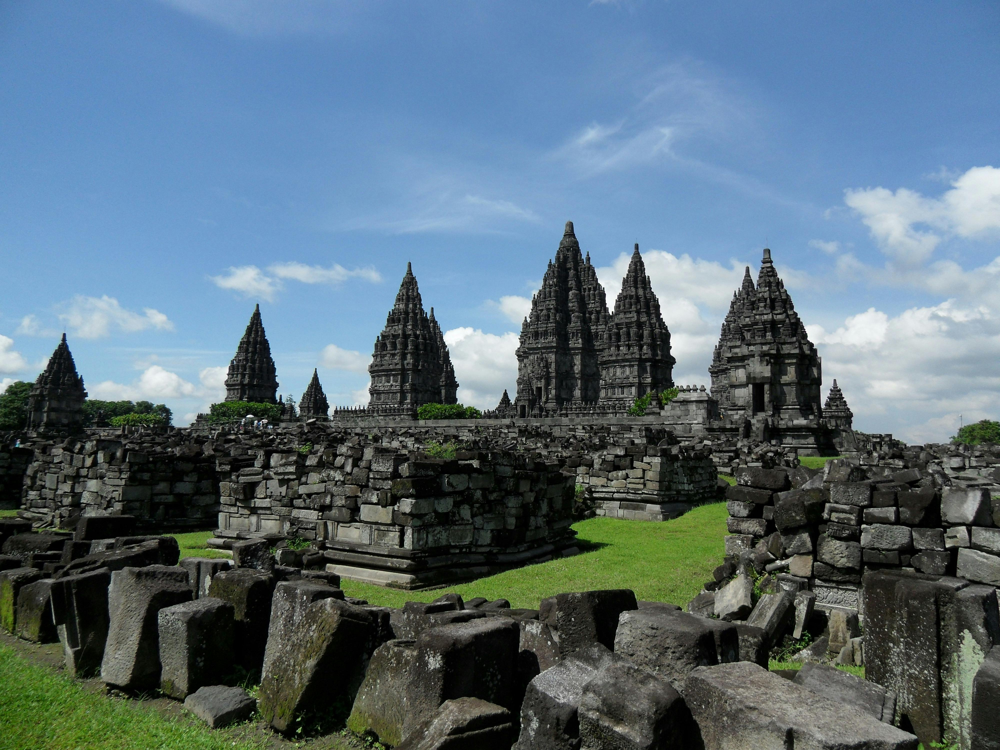
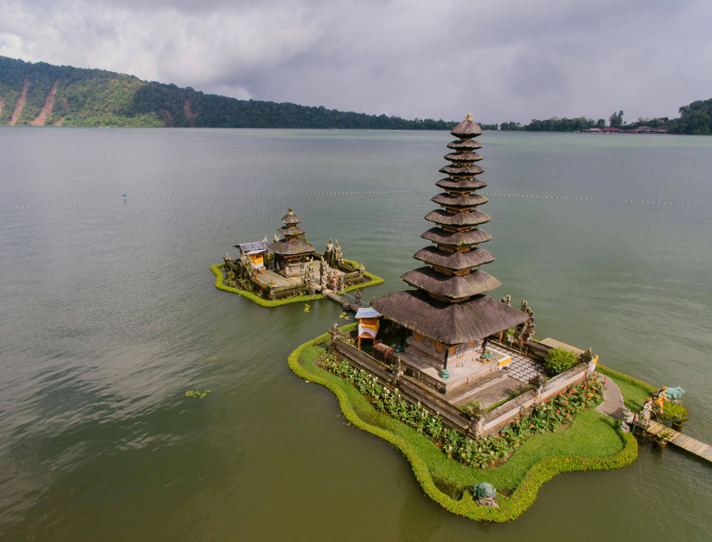
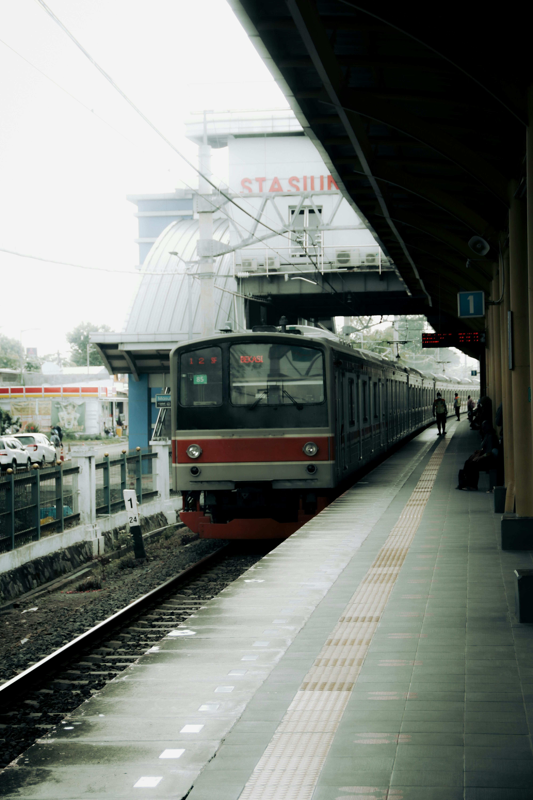
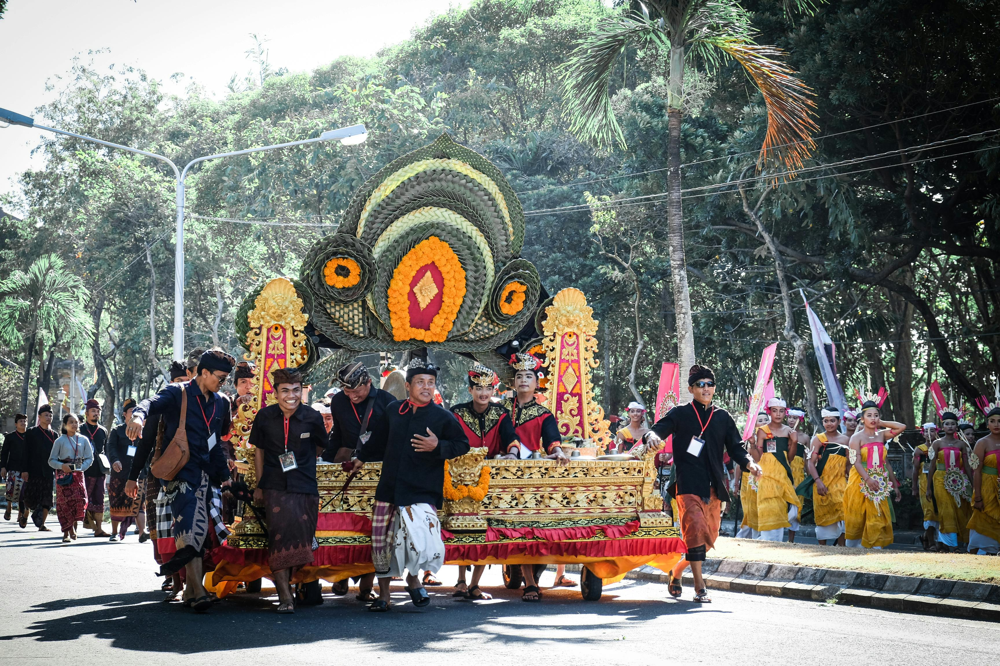

Overview

Indonesia is the largest archipelagic state in the world, consisting of over 17,000 islands scattered over 3,000 miles. It has a diverse geography that ranges from lush rainforests and rugged mountains to beautiful beaches and coral reefs. The nation is known for its rich biodiversity, hosting many endemic species and vibrant marine life.
With a population exceeding 270 million, Indonesia is the fourth most populous country and is characterized by a rich blend of cultures, languages, and traditions. Each region boasts its own unique heritage, and more than 300 ethnic groups contribute to the colorful tapestry of Indonesian society.
Explore the Country

Indonesia offers a plethora of experiences for travelers:
- Bali: Known for its picturesque beaches, vibrant arts scene, and spiritual retreats. Bali is a hotspot for surfers, artists, and wellness enthusiasts.
- Java: Home to the capital city, Jakarta, and cultural treasures like Yogyakarta, known for its traditional arts and the majestic Borobudur Temple.
- Sumatra: Known for its incredible natural beauty, including Lake Toba and the Bukit Lawang rainforest, where visitors can see orangutans in their natural habitat.
- Kalimantan (Borneo): Famous for its lush rainforests and diverse wildlife, including orangutans and pygmy elephants, making it a great destination for nature lovers.
- Komodo Island: Home to the iconic Komodo dragons and beautiful diving spots, this island is part of the UNESCO-listed Komodo National Park.
- Flores: Known for its stunning landscapes, traditional villages, and the famous Kelimutu Lakes, which change color based on volcanic activity.
Top Attractions

- Borobudur Temple: The largest Buddhist temple in the world, this 9th-century structure is adorned with intricate carvings and offers breathtaking views of the surrounding landscape.
- Prambanan Temple: A magnificent Hindu temple complex known for its stunning architecture and towering spires, located close to Yogyakarta.
- Bali’s Beaches: Renowned beaches such as Kuta, Seminyak, and Nusa Dua attract sun-seekers and surfers from around the globe.
- Raja Ampat Islands: A paradise for divers, these islands boast some of the most biodiverse marine life and coral reefs in the world.
- Mount Bromo: An active volcano famous for its stunning sunrise views and unique lunar-like landscape, attracting both hikers and photographers.
- Gili Islands: A trio of small islands off the coast of Lombok, known for their stunning beaches, vibrant nightlife, and excellent diving opportunities.
Cuisine
Indonesian cuisine is as diverse as its culture, with a plethora of flavors and cooking styles influenced by various regions. Key dishes include:
- Nasi Goreng: Indonesia's famous fried rice, often mixed with vegetables, chicken, or prawns, and topped with a fried egg.
- Sate: Skewered and grilled meat served with a delicious peanut sauce, often accompanied by rice cakes.
- Rendang: A rich, slow-cooked beef curry, originally from West Sumatra, known for its depth of flavor and tender meat.
- Gado-Gado: A traditional salad of boiled vegetables, eggs, and tofu, served with a savory peanut sauce.
- Bakso: Meatballs made from beef, chicken, or fish, often served in a savory broth with noodles.
- Tempeh: Fermented soybean cake, a staple source of protein that is popular across Indonesia.
History
Indonesia has a rich and complex history influenced by various kingdoms, colonialism, and independence movements. Key historical points include:
- Early Kingdoms: Ancient kingdoms such as Srivijaya and Majapahit flourished between the 7th and 15th centuries, contributing to trade and cultural exchange.
- Colonial Era: In the 17th century, the Dutch East India Company established control over many Indonesian islands, leading to centuries of colonial rule.
- Independence Movement: Following World War II, Indonesia declared its independence from Dutch colonial rule on August 17, 1945, a significant moment in its history.
- Modern Era: Indonesia has since developed into a democratic nation, facing challenges and successes in economic and social development.
Culture
Indonesia's culture is a rich mosaic of traditions, arts, and religions. Major cultural elements include:
- Languages: Over 700 languages are spoken in Indonesia, with Bahasa Indonesia as the official language, promoting unity among its diverse population.
- Traditional Arts: Includes batik (textile art), wayang kulit (shadow puppetry), and intricate wood carvings, showcasing Indonesia's artistic heritage.
- Dance and Music: Traditional dance forms, such as Balinese Kecak and Javanese court dances, are performed during ceremonies and festivals. Gamelan music, with its unique instrumentation, is an essential aspect of cultural expression.
- Religions: The majority of Indonesians are Muslim, with significant populations of Christians, Hindus, and Buddhists, contributing to the country's cultural diversity.
- Customs and Traditions: Each region has its own customs and rituals, often celebrated through festivals, marriage ceremonies, and communal gatherings.
Travel Tips
- Best time to visit: The dry season from May to September is ideal for traveling, with pleasant weather and minimal rain.
- Visa Requirements: Check visa regulations based on your nationality. Many travelers can obtain a visa on arrival for short stays.
- Local Etiquette: Dress modestly when visiting religious
- Stay Connected: Purchase a local SIM card for affordable internet access. Major cities have good coverage, making it easy to navigate and stay in touch.
- Currency: The local currency is the Indonesian Rupiah (IDR). ATMs are widely available in urban areas, but it's advisable to carry cash in rural regions.
- Health Precautions: Consult your doctor about vaccinations and carry necessary medications. Drink bottled water and be cautious with street food, choosing vendors with high turnover.
- Respect Local Customs: Be aware of local traditions and customs, particularly in more conservative areas. Always ask for permission before taking photos of people.
Transportation
Getting around Indonesia can vary widely due to its vast geography. Here are some transportation options:
- Domestic Flights: Given the size of the country, flying is often the most convenient option. Major airlines like Garuda Indonesia and Lion Air connect the islands efficiently.
- Ferries: Ferries are an excellent way to travel between islands, especially between Bali and Java. They offer scenic views and are generally affordable.
- Trains: Java has an extensive train network that connects major cities, providing a comfortable and scenic travel option. The train ride from Jakarta to Yogyakarta is particularly popular.
- Public Buses: In cities like Jakarta and Bandung, public buses and BRT (Bus Rapid Transit) systems are available. In rural areas, bemos (minibuses) serve as local transport.
- Motorbike Rentals: Renting a motorbike is a common way to explore, especially in Bali. However, always wear a helmet and be cautious of traffic rules.
- Ride-Hailing Services: Apps like Gojek and Grab are widely used in urban areas for convenient transportation, food delivery, and even logistics.
Famous Festivals and Events
Indonesia hosts numerous vibrant festivals that celebrate its rich cultural diversity. Here are some of the most notable:
- Idul Fitri: The festival marking the end of Ramadan is celebrated with prayers, family gatherings, and feasting. It's a time of forgiveness and renewal.
- Bali Arts Festival: Held annually from June to July, this festival showcases Balinese culture through dance, music, and art exhibitions, attracting visitors from all over.
- Waisak: Celebrated by Buddhists, this festival commemorates the birth, enlightenment, and death of Buddha. It involves candle-lit processions and ceremonies at Borobudur Temple.
- Java Jazz Festival: One of the largest jazz festivals in the world, held annually in Jakarta, featuring local and international artists, making it a vibrant celebration of music.
- Pasola: A traditional war ritual celebrated in Sumba, featuring horse riders engaging in mock battles, symbolizing the start of the rice planting season.
- Galungan: A Balinese Hindu festival that occurs every 210 days, celebrating the victory of dharma (good) over adharma (evil) with offerings, prayers, and family reunions.